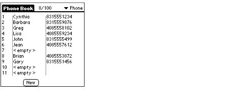

|
You can use the Palm OS® Telephony Manager to access a variety of telephony services in your applications. This chapter contains the following sections that describe how to use the Palm OS Telephony API:
• Telephony Service Types describes the component parts of the telephony API.
• Using the Telephony API describes how to use the telephony API in your applications.
• Using the Phone Book Capabilities describes the PhBkApp sample program, which provides an excellent example of a program that uses the Telephony Manager.
For detailed information about the Telephony Manager data types, constants, and functions, see the following chapters in the Palm OS Programmer's API Reference:
• Chapter 68, "Telephony Basic Services."
• Chapter 69, "Telephony Security and Configuration."
• Chapter 70, "Telephony Network."
• Chapter 71, "Telephony Calls."
• Chapter 72, "Telephony SMS."
• Chapter 73, "Telephony Phone Book."
The "Telephony Basic Services" chapter describes the basic services and provides a map to the other functions.
Telephony Service Types

The telephony API organizes functions within sets called service sets. Each service set contains a related set of functions that may or may not be available on a particular mobile device or network. You can use the TelIs<ServiceSet>Available macro to determine if a service set is supported in the current environment, and you can use the TelIs<FunctionName>Supported macro to determine if a specific function is supported in the current environment.
NOTE: Sometimes a service set is supported, but not all of the functions in that service set are supported. See Testing the Telephony Environment for more information.
Each function in the telephony API is prefixed with Tel; each telephony service set adds an addition 3 characters to the prefix. Table 10.1 describes the telephony service sets.
Table 10.1 Telephony API service sets
| Service set |
Functionality |
Service prefix |
| Basic |
Basic functions that are always available |
Tel |
| Configuration |
Services that allow you to configure phones, including SMS configuration. |
TelCfg |
| Data calls |
Data call handling |
TelDtc |
| Emergency calls |
Emergency call handling |
TelEmc |
| Information |
Functions to retrieve information about the current phone. |
TelInf |
| Network |
Functions the provide network-oriented services, including authorized networks, current network, signal level, and search mode information |
TelNwk |
| OEM |
Functions that allow hardware manufacturers to extend the Telephony Manager. Each manufacturer can provide a specific set of OEM functions for a particular device |
TelOem |
| Phone book |
Functions to access the phone's SIM and address book, including the ability to create, view, and delete phone book entries. |
TelPhb |
| Power |
Power supply level functions. |
TelPow |
| Security |
Functions that provide PIN code management and related services for phone and SIM security-related features |
TelSty |
| Short Message Service |
Services to handle Short Message Service (SMS) and to enable the reading, sending, and deleting of short messages |
TelSms |
| Sound |
Phone sound management, including the playing of key tones and muting. |
TelSnd |
| Speech calls |
Functions to handle the sending and receiving of speech calls. This service also includes functions that handle DTMF. |
TelSpc |
Using the Telephony API
This section provides examples excerpted from the Phone Book Application (PhBkApp) sample program, which provides the following capabilities:
• creates, modifies, and deletes entries on a phone, using the SIM and built-in storage on the phone device
• imports entries from the Address Book application
• exports entries to the Address Book application
The PhBkApp program opens and accesses the Telephony Manager library and makes a number of calls into the library. It provides an excellent example of using telephony services in your applications.
Accessing the Telephony Manager Library
Before you can use the Telephony Manager library, you must load the library and obtain a reference number for it. Each of the functions in the library requires a reference number argument, which is used with the system code to access a shared library.
Each of the functions in the library also requires an application attachment identifier, which you can obtain by calling the TelOpen function.
The example function LoadTelMgrLibrary, which is shown in Listing 10.1, makes sure that the Telephony Manager library is loaded, obtains an application attachment identifier, and returns a reference number for it.
Listing 10.1 Loading the Telephony Manager library
Err LoadTelMgrLibrary(UInt16 *telRefNumP, UInt16 *telAppIdP)
{
Err err;
err = SysLibFind(kTelMgrLibName, telRefNumP);
if (err != errNone)
{
err = SysLibLoad(kTelMgrDatabaseType,
kTelMgrDatabaseCreator, telRefNumP);
if (err)
return err;
}
err = TelOpen(*telRefNumP, kTelMgrVersion, telAppIdP);
return err;
}
The LoadTelMgrLibrary function first calls the SysLibFind function to determine if the library has already been loaded, which might be the case if your code has been called by another application that has already loaded the library.
If the library has not already been loaded, LoadTelMgrLibrary calls the SysLibLoad function to load the library and obtain a reference number for it.
After obtaining a reference number for the library, LoadTelMgrLibrary calls the TelOpen function to open the loaded library.
Closing the Telephony Manager Library
When you are done with the library, you should close it by calling the TelClose function, which releases any resources associated with your use of the Telephony Manager.
As shown in Listing 10.2, you must test the return value of the TelClose function; if the result is not telErrLibStillInUse, you must unload the shared library by calling the SysLibRemove function.
Listing 10.2 Closing the Telephony Manager library
Err UnloadTelMgrLibrary(UInt16 telRefNum, UInt16 telAppId)
{
if ((TelClose(telRefNum, telAppId)!= telErrLibStillInUse))
SysLibRemove(telRefNum);
return errNone;
}
Using Synchronous and Asynchronous Calls
Almost all of the telephony API functions can be called either synchronously or asynchronously. If you call a function asynchronously, your application receives an event to notify it that the function has completed; the event that you receive contains status and other information returned by the function.
This section provides a simple example of calling the TelPhbAddEntry function both synchronously and asynchronously to illustrate the difference.
When you call a function synchronously, you need to test the result value returned by the function to determine if the call was successful. For example, the code in Listing 10.3 calls the TelPhAddEntry function synchronously.
Listing 10.3 Calling a function synchronously
err = TelPhbAddEntry(gPrefsP->telRefNum,
gPrefsP->telAppID, &gEntry, NULL);
printf("Result of adding entry is %d", err);
To call the same function asynchronously, you specify a transaction ID in the call, instead of specifying NULL as the last argument. The transaction ID (transId in Listing 10.4) is an unsigned integer value that is filled in with a value associated with the asynchronous operation that is begun. This same ID value is found in the transId field of event you receive when the operation completes.
Listing 10.4 Calling a function asynchronously
err = TelPhbAddEntry(gPrefsP->telRefNum,
gPrefsP->telAppID, &gEntry, &transId);
static void ProcessTelephonyEvent(TelEventType *eventP)
{
switch( eventP->functionId )
{
...
case kTelPhbAddEntryMessage:
printf("Result of adding entry is %d",
eventP->returnCode);
break;
...
}
Using Data Structures With Variably-sized Fields
Many of the telephony functions use data structures that have variably-sized buffer fields. For example, the TelPhbGetEntry function uses the TelPhbEntryType structure, which contains two such fields.
typedef struct _TelPhbEntryType
{
UInt16 phoneIndex;
Char* fullName;
UInt8 fullNameSize;
Char* dialNumber;
UInt8 dialNumberSize;
} TelPhbEntryType;
The fullName and dialNumber buffers are variable-sized strings that you allocate in the heap. When you initialize one of these structures to pass to the TelPhbGetEntry function, you must preallocate the buffers and store the allocated size in the corresponding size fields.
The following code sample initializes a TelPhbEntryType data structure and passes it to the TelPhbGetEntry function to retrieve an entry from the phone book.
#define maxNameSize 45
#define maxNumSize 20
TelPhbEntryType myEntry;
UInt16 theIndex = 1;
myEntry.phoneIndex = theIndex;
myEntry.fullName = MemPtrNew(maxNameSize);
myEntry.fullNameSize = maxNameSize;
myEntry.dialNumber = MemPtrNew(maxNumSize);
myEntry.dialNumberSize = maxNumSize;
err = TelPhbGetEntry(gPrefs->telRefNum, gPrefsP->telAppId,
&myEntry, NULL);
Note that you can call the TelPhbGetEntryMaxSizes function to retrieve the maximum name size (in addition to other information) instead of hardcoding it, as done in the above example.
Upon return from the function, the buffer fields are filled in, and the size fields contain the actual number of bytes that were stored into the buffer fields.
If the allocated size of a buffer is not large enough to contain the entire value, the command function does the following:
• Returns the telErrBufferSize error.
• Fills the buffer with as much data as it can, and truncates the data that does not fit. If the data ends with a null terminator and is truncated, the null terminator is retained.
• Sets the value of the size field to the actual size required to contain all of the data.
Note that for string buffers, the size includes the byte required for the null terminator character.
NOTE: When you call a function asynchronously, the telErrBufferSize error is returned in the returnCode field of the event you receive upon completion of the function's execution. Also, when you call a function asynchronously, it is your responsibility to ensure that any data structure used by the function remains in memory until you receive the completion event.
Testing the Telephony Environment
Before running your application, you need to verify that the environment in which it is running (the Palm Powered™ handheld and the telephone device) supports the facilities that your application needs. The Telephony Manager allows you to determine if a specific service set is available, and also allows you to determine if a specific function call is supported.
The code excerpt in Listing 10.5 shows how the PhBkApp program verifies that the environment supports the capabilities that it needs, which include all of the phone book-related features of the Telephony Manager. The PhBkApp program first tests for the availability of the phone book services, and then determines if several specific functions are supported. Note that the PhBkApp refuses to run if any of the capabilities it is using are not available.
Listing 10.5 Testing for the presence of specific capabilities
err = TelIsPhbServiceAvailable(gDataP->refNum, gDataP->appId, NULL);
// Test if phone book capabilities are present
if (err != errNone)
return err;
// Check that this phone supports adding entry services
err = TelIsPhbAddEntrySupported(gDataP->refNum, gDataP->appId, NULL);
if (err != errNone)
return err;
// Check that this phone supports selecting a phone book
err = TelIsPhbSelectPhonebookSupported(gDataP->refNum, gDataP->appId, NULL);
if (err != errNone)
return err;
// Check that this phone supports getting entries
err = TelIsPhbGetEntriesSupported(gDataP->refNum, gDataP->appId, NULL);
if (err != errNone)
return err;
// Check that this phone supports getting entry count
err = TelIsPhbGetEntryCountSupported(gDataP->refNum, gDataP->appId, NULL);
if (err != errNone)
return err;
// Check that this phone supports deleting an entry
err = TelIsPhbDeleteEntrySupported(gDataP->refNum, gDataP->appId, NULL);
return err;
For a complete list of the service availability macros, see TelIs<ServiceSet>Available in Chapter 68, "Telephony Basic Services," in Palm OS Programmer's API Reference.
For more information about determining if a specific function is supported, see TelIs<FunctionName>Supported in Chapter 68, "Telephony Basic Services," in Palm OS Programmer's API Reference.
Using the Phone Book Capabilities
This section describes the implementation of the PhBkApp program, which you can use as a model for implementing your own telephony-based applications. The PhBkApp code is described in the following sections:
• About the PhBkApp Program provides an overview of the PhBkApp program user interface.
• Launching the PhBkApp Program describes the main entry point in the program, which performs initialization and verifies that the environment supports the required telephony services.
• Event Processing in the PhBkApp Program describes how the program fields events and calls the appropriate functions for each event type.
• Displaying the Phone Book describes how the PhBkApp program accesses and provides a user interface to the phone book entries in the connected phone.
• Retrieving the List of Phone Book Entries provides a detailed walkthrough of how PhBkApp retrieves the current entries from one of the phone books on the connected phone.
• Editing Phone Book Entries describes how the PhBkApp program makes modifications to the phone book entries in the connected phone.
About the PhBkApp Program
The PhBkApp sample program uses Telephony Manager services and provides an interface to the phone book on a connected phone device.
NOTE: The PhBkApp program makes asynchronous calls to the Telephony Manager, which allows for operations to be cancelled, and allows the program to display progress to the user.
The PhBkApp program uses the simple form shown in Figure 10.1 as its initial interface.
Figure 10.1 The initial screen of the PhBkApp program
When the user taps the Get List button, PhBkApp reads the entries in the selected phone book (SIM, built-in, or other) on the connected phone, and displays the list to the user. Figure 10.2 shows a sample display of the phone list.
Figure 10.2 Phone book display in the PhBkApp program
Note that the phone book indicator in the upper right corner of Figure 10.2 shows "Phone," which indicates that the displayed list is the built-in phone book. The user can switch to a different phone book by tapping the arrow and choosing from the popup list.
The user can tap on an entry in the list to edit or delete that entry. If the user deletes an entry, the list maintains an empty entry in that position, as shown in Figure 10.3, in which the entry for Harry (the seventh entry) has been deleted.
Figure 10.3 Phone list with deleted entry

To create a new entry, or look up an existing entry in the phone book, the user can tap the New button, which displays the editing form shown in Figure 10.4.
Figure 10.4 The phone book entry editing form
PhBkApp also displays the editing form when the user taps on an entry.
The next sections describe how the PhBkApp program implements this interface.
Launching the PhBkApp Program
The main entry point for the PhBkApp program, PilotMain, first verifies that the handheld device is version compatible with the program, which means that the device is running version 4.0 or later of the Palm OS. If so, then PilotMain, which is shown in Listing 10.6, performs the following actions:
• Calls PrvPhbkAppStart to start the application. This function creates the database used by PhBkApp, opens the telephony library, and initializes the form that the program uses to display the phone book entries.
• Calls its main loop, PrvPhbkAppEventLoop, which is described in Event Processing in the PhBkApp Program.
• Calls PrvPhbkAppStop to stop the application. This function closes the database and form, and deallocates the storage that PhBkApp allocated for its structures.
Listing 10.6 Launching the PhBkApp program
UInt32 PilotMain(UInt16 cmd, MemPtr cmdPBP, UInt16 launchFlags)
{
#pragma unused (cmdPBP)
Err err = errNone;
switch (cmd)
{
case sysAppLaunchCmdNormalLaunch:
err = PrvPhbkAppRomVersionCompatible(kPhbkMinVersion, launchFlags);
if (err != errNone)
return (err);
err = PrvPhbkAppStart();
if (err == errNone)
PrvPhbkAppEventLoop();
PrvPhbkAppStop();
break;
default:
break;
}
return 0;
}
Note that PilotMain passes a version value to the RomVersionCompatible function. This value is defined as follows:
#define kPhbkMinVersion sysMakeROMVersion(4,0,0,sysROMStageDevelopment,0)
The PrvPhbkAppRomVersionCompatible function, which is shown in Listing 10.7, determines if the device has a compatible ROM, returning 0 if so.
Listing 10.7 The PrvPhbkAppRomVersionCompatible function
static Err PrvPhbkAppRomVersionCompatible(UInt32 requiredVersion, UInt16 launchFlags)
{
UInt32 romVersion;
FtrGet(sysFtrCreator, sysFtrNumROMVersion, &romVersion);
if (romVersion < requiredVersion)
{
if ((launchFlags & (sysAppLaunchFlagNewGlobals | sysAppLaunchFlagUIApp))
==(sysAppLaunchFlagNewGlobals | sysAppLaunchFlagUIApp))
{
ErrNonFatalDisplay("Incompatible ROM");
// Palm OS 1.0 will continuously relaunch this app unless we switch to
// another safe one.
if (romVersion < sysMakeROMVersion(2,0,0,sysROMStageRelease,0))
{
AppLaunchWithCommand(sysFileCDefaultApp, sysAppLaunchCmdNormalLaunch,
NULL);
}
}
return (sysErrRomIncompatible);
}
return 0; //ROM is compatible
}
Event Processing in the PhBkApp Program
The main loop of the PhBkApp program processes events for the program, branching to the appropriate functions when certain events arrive. This is a standard event loop, as described in The Application Event Loop in Chapter 3, "Event Loop."
The PhBkApp main loop function, PrvPhbkAppEventLoop, calls the PrvPhbkAppHandleEvent function to process PhBkApp events, which pertain to one of two forms:
• The List form displays the list of numbers in the phone book. List form handling is described in Displaying the Phone Book.
• The Edit form allows the user to edit an entry in the phone book. Edit form handling is described in Editing Phone Book Entries.
Displaying the Phone Book
The PhBkApp list form manages display of the phone book entries. The PrvPhbkListFormDoCommand function processes user command events in this form, which include:
• The form's menu commands:
- When the user taps the About Phone Book command, PhBkApp displays an about screen. - When the user taps the Export to Address Book command, PhBkApp uses the UDA and PDI interfaces to export a category from the phone book to the Palm Powered handheld's address book. For more information about the PDI library, see Chapter 3, "Personal Data Interchange."
• Selection of items in the list for editing.
• Handling of the phone book selection control, which the user can tap to pick from among the phone books available on the device. For example, most phones feature a phone book stored on the SIM and a phone book in the phone's memory.
• Standard form handling, including scrolling and key handling.
• Retrieving of the phone book entries from the connected phone when the user taps the Get List button, as described in Retrieving the List of Phone Book Entries.
• Adding a new entry in PhBkApp's database and displaying the Edit form to insert values into the fields in the new entry when the user taps the New button or double-taps an empty entry in the list. For more information, see Editing Phone Book Entries.
Listing 10.8 shows the PrvPhbkListFormDoCommand, which processes form commands.
Listing 10.8 Processing phone list form commands
static Boolean PrvPhbkListFormDoCommand( DmResID cmdId )
{
switch (cmdId)
{
case PhbkListGetButton:
PhbkGetList();
break;
case PhbkListNewButton:
gAction = kPhbkActionNew;
PrvPhbkListFormNewEntry();
break;
case MenuExporttoAddressBook:
if ((gStorage[gCurCategory].canEdit == true)
&& (gStorage[gCurCategory].entryCount != 0))
if (!HostGremlinIsRunning())
TransferExportCategory(gCurCategory);
break;
case MenuAboutPhoneBook:
MenuEraseStatus(0);
AbtShowAbout(kPhbkAppCreator);
break;
default:
return false;
}
return true;
}
Retrieving the List of Phone Book Entries
The PhBkApp program retrieves the entries in the selected phone book by calling the PhbkGetList function, which is shown in Listing 10.9. This function displays a progress bar and calls the PrvPhbkGetListHandleEvent function to read phone book entries and store them in the linked list managed by PhBkApp.
Listing 10.9 Retrieving the phone book entries
Err PhbkGetList( void )
{
Err err;
EventType evt;
Boolean handled = false;
UInt16 linkedListCount;
err = PrvPhbkGetListStart();
if (err)
return err;
gStorage[gCurCategory].canEdit = true;
do
{
TelGetEvent(gDataP->refNum, gDataP->appId, &evt, kPhbkMidBallRefreshRate);
PrgHandleEvent(gDataP->prgP, &evt);
PrvPhbkGetListHandleEvent(&evt);
if (gDataP->prgP == 0)
gDataP->exit = true;
// When a phone UI error dialog is displayed, progress is closed
if ( (gDataP->prgP != 0) && ( (gDataP->prgP->stage ==
kPhbkStageClosingConnection) || PrgUserCancel(gDataP->prgP) || ( evt.eType ==
appStopEvent) ) )
{
if (PrgUserCancel(gDataP->prgP))
{
gStorage[gCurCategory].canEdit = false;
PhbkTelMgrCancel();
}
gDataP->exit = true;
}
linkedListCount = PhbkToolsLinkedListCount();
} while (!(gDataP->exit) && (linkedListCount));
// Close the progress if not done before
PrvPhbkGetListPrgClose();
FrmUpdateForm(FrmGetActiveFormID(), frmRedrawUpdateCode);
return errNone;
}
The PhBkApp program uses a progression of states to manage retrieving phone book entries from the connected device. When it enters into a state, the program updates the progress dialog and sends an asynchronous request to the Telephony Manager.
NOTE: The functions mentioned in this section are found in the PhBkGetList module, the PhBkTelMgr module, or in the Telephony Manager API.
The PrvPhbkGetListHandleEvent function processes the events returned from the Telephony Manager. When it receives a response back from a previous request, PrvPhbkGetListHandleEvent transitions to the next state, performs whatever tasks go along with entering that state, and sends the next request to the Telephony Manager.
Table 10.2 shows the progression of states used to retrieve phone book entries.
Table 10.2 Phone book list retrieval states
| # |
State name constant |
Description of state |
| 1. |
kPhbkStageConnecting |
PhBkApp is opening a connection to the phone device; a call to TelOpenPhoneConnection is pending. |
| 2. |
kPhbkStageSelectingPhonebook |
PhBkApp is selecting the current phone book (such as SIM or built-in); a call to TelPhbSelectPhonebook is pending. |
| 3. |
kPhbkStageGettingPhonebookInfo |
PhBkApp is retrieving information about the entries in the selected phone book; a call to TelPhbGetEntryCount is pending. |
| 4. |
kPhbkStageGettingEntries |
PhBkApp is retrieving entries from the selected phone book; a call to TelPhbGetEntries is pending. |
| 5. |
kPhbkStageClosingConnection |
PhBkApp is closing the connection with the phone device; a call to TelClosePhoneConnection is pending. |
Each state transition involves updating the progress dialog display, so PhBkApp signals the transitions by passing the new state to the PrgUpdateDialog function, which passes the state onto the progress dialog's callback function, PrvPhbkGetListCallback.
Connecting with the Phone
When the user taps the Get List button, the PrvPhbkGetListStart function form code initializes the progress dialog display and:
• sets the current state to kPhbkStageConnecting
• calls the PhbkTelMgrConnect function, which issues an asynchronous call to the TelOpenPhoneConnection telephony function
Selecting the Phone Book on the Phone
When the list form event handler receives a response from the Telephony Manager indicating that it has connected with the phone, it does the following:
• sets the current state to kPhbkStageSelectingPhonebook
• calls the PhbkTelMgrSelectPhoneBook function, which issues an asynchronous call to the TelPhbSelectPhonebook function to select the phone book that was chosen by the user
Retrieving Phone Book Information from the Phone
When the list form event handler receives a response from the Telephony Manager indicating that it has selected the phone book on the phone, it does the following:
• sets the current state to kPhbkStageGettingPhonebookInfo
• calls the PhbkTelMgrGetEntryCount function, which issues an asynchronous call to the TelPhbGetEntryCount function to retrieve the number of entries in the selected phone book
Retrieving Phone Book Entries from the Phone
When the list form event handler receives a response from the Telephony Manager that specifies the number of entries in the selected phone book, it does the following:
• sets the current state to kPhbkStageGettingEntries
• creates space in the internal data storage system for the entries
• issues an asynchronous call to the TelPhbGetEntries function to retrieve the phone book data
Closing the Connection
When the list form event handler receives the entry data back from the Telephony Manager, it does the following:
• sets the current state to kPhbkStageClosingConnection
• calls the PhbkTelMgrCloseConnection function, which issues an asynchronous call to the TelClosePhoneConnection function to close the connection
• adds the downloaded phone book entries to the PhBkApp program's internal data storage system
Editing Phone Book Entries
The PhBkApp edit form manages editing of the phone book entries, including the following actions:
• adding a new entry to the phone book
• modifying the name or number data in an existing entry
• deleting an entry
PhBkApp displays the edit form when the user taps the New button or when the user taps on an entry in the displayed list. The edit form, which allows either modification or deletion of the selected entry, is shown in Figure 10.4.
This form operates in a analogous manner to the list form: a state machine tracks which Telephony Manager call is pending and performs the appropriate actions according to the current state. In addition to calling the TelOpenPhoneConnection, TelPhbSelectPhonebook, and TelClosePhoneConnection functions, the edit form calls the TelPhbAddEntry and TelPhbDeleteEntry functions.
Summary of Telephony Manager
| Telephony Manager Functions |
|
| Basic Functions |
| |
|
| |
|
| |
|
| |
|
| |
|
| |
|
| |
|
| |
|
| |
|
| |
|
| |
|
| |
|
| |
|
| |
|
| Data Calls |
| |
|
| |
|
| Emergency Calls |
| |
|
| |
|
| |
|
| Network Interface |
| |
|
| |
|
| |
|
| |
|
| |
|
| Phone Book |
| |
|
| |
|
| |
|
| |
|
| |
|
| Power Management |
| |
|
| |
|
| Security |
| |
|
| |
|
| Short Message Services |
| |
|
| |
|
| |
|
| |
|
| |
|
| |
|
| |
|
| |
|
| |
|
| Sound |
| |
|
| |
|
| Speech Calls |
| |
|
| |
|
| |
|
| |
|
| |
|
| |
|
| |
|
|